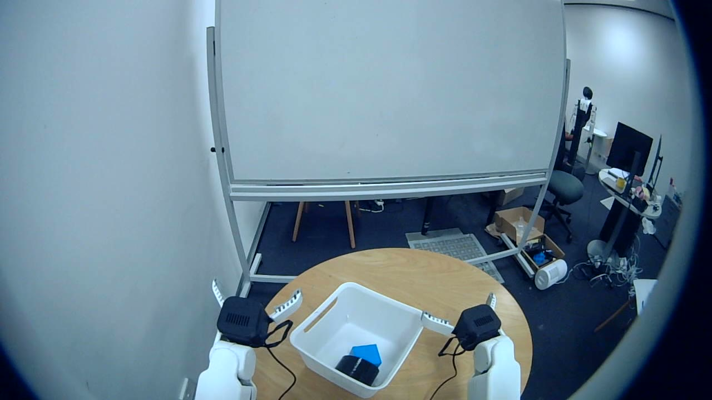
Teaching a mobile two-armed robot new tasks — and to spot the unexpected
Dave Pu
Supervisor: Dr William Zhi
PAIR Lab · School of Computer Science · The University of Sydney
Before: every task needed its own exact program.
Problem: homes and hospitals keep changing.
Now: robots learn by imitating a person.
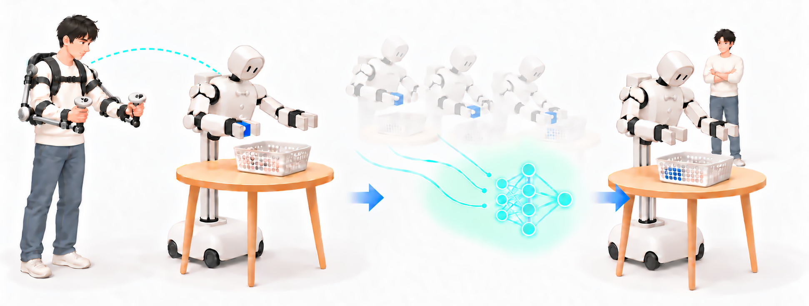
Generated by AI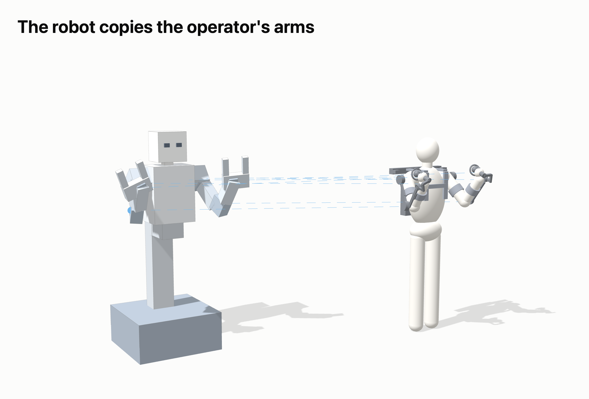
From a human demonstration to robot action.
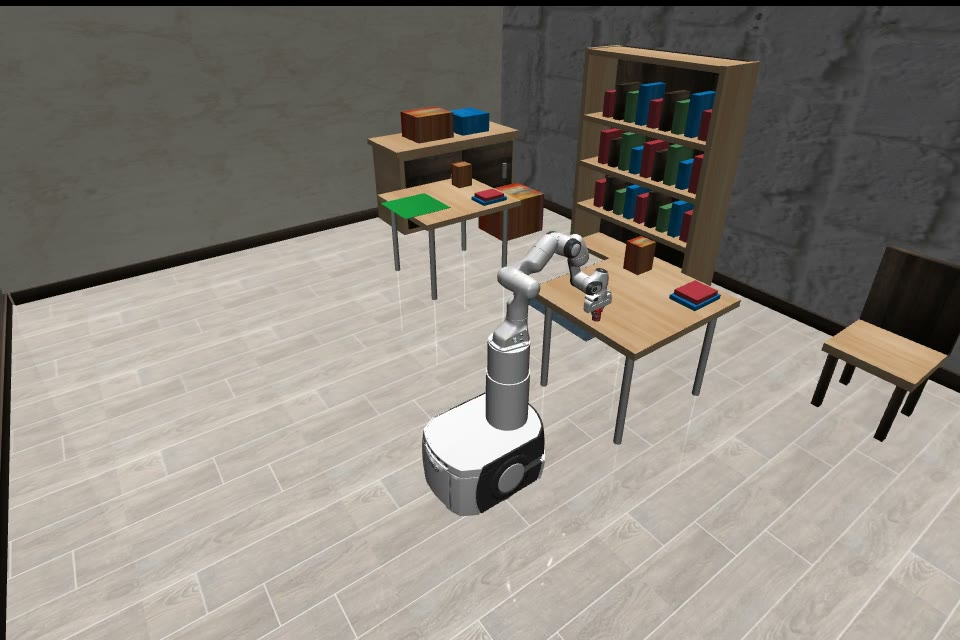
Make the learned behaviour reliable.
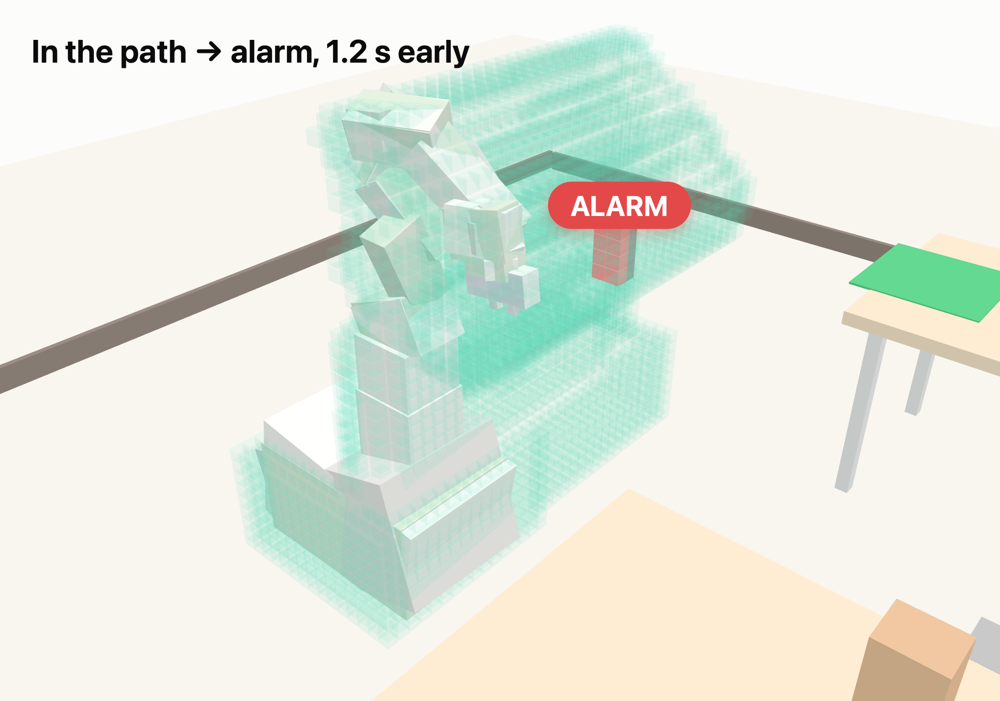
See in 3D whether something is in the way.
Our path: real robot → tests in simulation → back on the real robot
A person wears an exoskeleton; the robot copies it live.
3 cameras + every joint, 30 times a second.
A neural network[1][2]: images → movements.
The robot runs it, with safety checks.
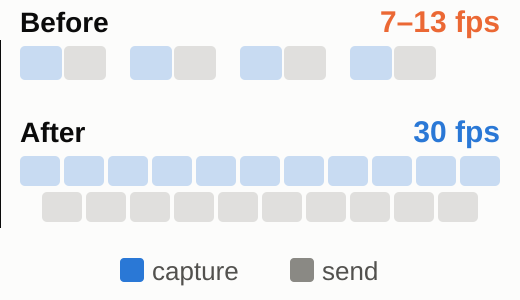
Capture and send now run in parallel.
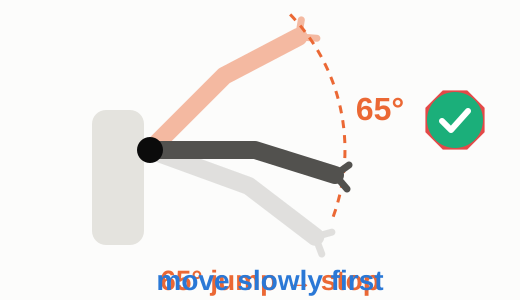
Move slowly to the start pose first.
Blend each new plan into the last[4].
Each problem: find the real cause → fix it → measure again.
Real robot, no human control.
Shake when it switches plans (lower = smoother)
Every trial is different, and mistakes can damage the robot.
The same task, identical conditions, repeated 50 times, scored automatically.
Successes out of 50
Base parks off — the arm corrects.
Teach target positions, not speeds.
Add demos of the arm correcting.
Error: 7.1 → 1.9 mm
As a newcomer, I started small: improving a method from our own lab.
Watches the arm's path in the camera image. A flat image can't tell in the way from far behind.
Depth[9] → 3D cubes → only cubes in the arm's path count. Works on a moving robot.
2D flags both. 3D: only the near one is in the path.
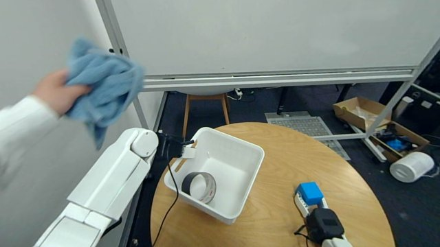
Towel in the path → alarm → robot stopped safely.
The real robot completes the task on its own.
From 40 to 49 of 50, by learning from failures.
127 of 129 correct, zero false alarms — also on the real robot.
Varied demos matter
"Is it in my way?" needs 3D
3D monitor fully on the real robot
Warn earlier · more scenes
Questions?
With thanks to Dr William Zhi, Isa He and the PAIR Lab, School of Computer Science
Arm joint encoders, triggers and buttons, sent over USB serial.
Decodes the exoskeleton, maps it to robot joints 100× per second; records; runs the learned model.
Checks limits, freshness and conflicts on the robot itself, then passes commands to motion control.
Motion control and motor drivers over CAN: two arms, grippers, torso, wheeled base.
real-robot demonstrations · about 72,600 frames · 30 fps (pick-and-place)
earlier demonstrations · 22,256 frames
long driving demonstrations · 87,409 frames
fine-tuning steps for the pretrained models π0 / π0.5 (plus ACT)
model on the real robot · robot control runs at 30 Hz
simulation demonstrations for ACT · tested on 50 unseen trials
Two head cameras → points in 3D.
Space divided into small cubes.
Each cube stores what it normally looks like (DINOv3[10] features).
Only cubes the arm will sweep in the next 1–2 s are checked.
A connected cluster of unusual cubes larger than a threshold.
Single noisy cubes are ignored — only a cluster counts.
The threshold is set using normal runs only.
Alarm thresholds tuned on normal runs only, never on the test cases
All rules frozen before the final test; the final test was run once
The 2D method was fully trained and its bugs fixed before comparing — our conclusion did not change
Paired test: same scene, only the object position changes
Statistical test (McNemar[11]) on the paired results: p < 0.001
| Case | Should alarm? | Cases | 3D alarms (ours) | 2D alarms |
|---|---|---|---|---|
| Normal run | No | 20 | 0 | 0 |
| Change outside the path | No | 19 | 0 | 0 |
| Brief blocking (< 1 s) | No | 20 | 0 | 4 |
| Appearance-only change | No | 12 | 0 | 11 |
| Object already there | Yes | 11 | 11 | 8 |
| Object appears at arm height | Yes | 12 | 12 | 6 |
| Object appears on the target table | Yes | 3 | 1 | 0 |
| Paired: inside the path | Yes | 16 | 16 | 13 |
| Paired: outside the path | No | 16 | 0 | 10 |
| Judged correctly | 129 | 127 | 89 |
A towel enters the robot's path → the monitor raises the alarm. In a live test, the alarm stopped the robot safely.
Alarm threshold: 0.46
Runs live with the robot: 0.13 → ~3 updates per second.
Next: a systematic real-robot test, same fair-test rules.
The simulator's robot: PandaOmron[12] in RoboCasa[6].
What we study is the task type (move + pick-and-place) and the monitoring method, not one robot's shape.
A standard robot lets us compare fairly with existing methods.
Our own robot's results are on the main slides.
Learning a task from examples shown by a person.
The learned "brain" that turns what the robot sees into its next movement.
A person controlling the robot remotely — here with an exoskeleton.
Measuring distance from two cameras, like our two eyes.
A physics-accurate virtual copy of the robot and the room.
The monitor warns although nothing is in the way.
[1] T. Z. Zhao, V. Kumar, S. Levine, and C. Finn, “Learning Fine-Grained Bimanual Manipulation with Low-Cost Hardware,” RSS, 2023.
[2] K. Black et al., “π0: A Vision-Language-Action Flow Model for General Robot Control,” RSS, 2025.
[3] S. Macenski, T. Foote, B. Gerkey, C. Lalancette, and W. Woodall, “Robot Operating System 2: Design, architecture, and uses in the wild,” Science Robotics, 7(66), 2022.
[4] K. Black, M. Y. Galliker, and S. Levine, “Real-Time Execution of Action Chunking Flow Policies,” NeurIPS, 2025.
[5] K. Black et al., “π0.5: a Vision-Language-Action Model with Open-World Generalization,” CoRL, PMLR 305, 2025.
[6] S. Nasiriany et al., “RoboCasa: Large-Scale Simulation of Household Tasks for Generalist Robots,” RSS, 2024.
[7] E. Todorov, T. Erez, and Y. Tassa, “MuJoCo: A physics engine for model-based control,” IROS, 2012.
[8] Y. Zhou, R. Qiu, Y. Chen, J. Cui, and W. Zhi, “PATCH: Action-Chunk-Conditioned Latent Patch Innovation Monitoring for Robot Manipulation,” arXiv:2606.16690, 2026.
[9] B. Wen, S. Dewan, and S. Birchfield, “Fast-FoundationStereo: Real-Time Zero-Shot Stereo Matching,” CVPR, 2026.
[10] O. Siméoni et al., “DINOv3,” arXiv:2508.10104, 2025.
[11] Q. McNemar, “Note on the sampling error of the difference between correlated proportions or percentages,” Psychometrika, 12(2), 1947.
[12] ARISE Initiative, “PandaOmron,” robosuite (open-source framework), robot model source code.
AI use: the illustration on slide 2 was generated with an AI image tool, based on our robot model. All other figures and animations were made by us from our own experiment data.
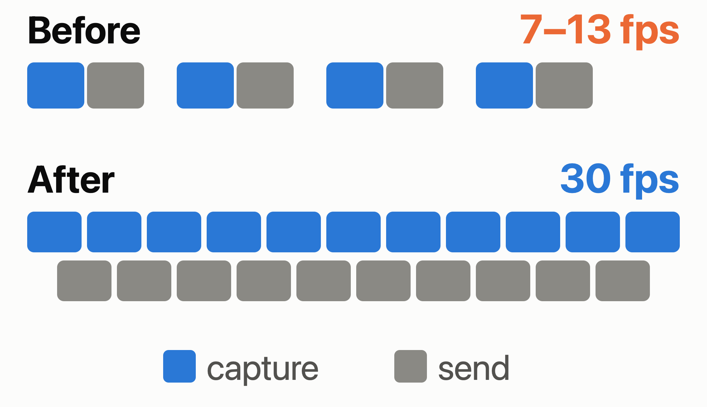
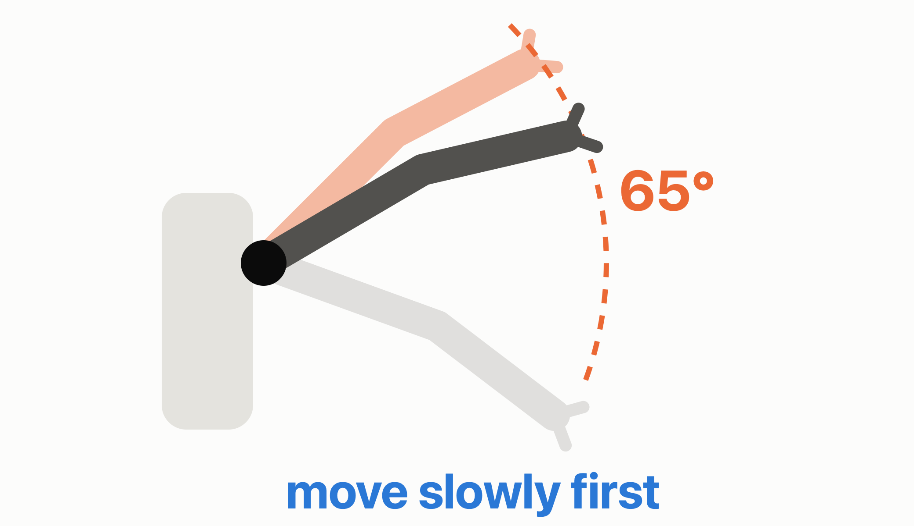
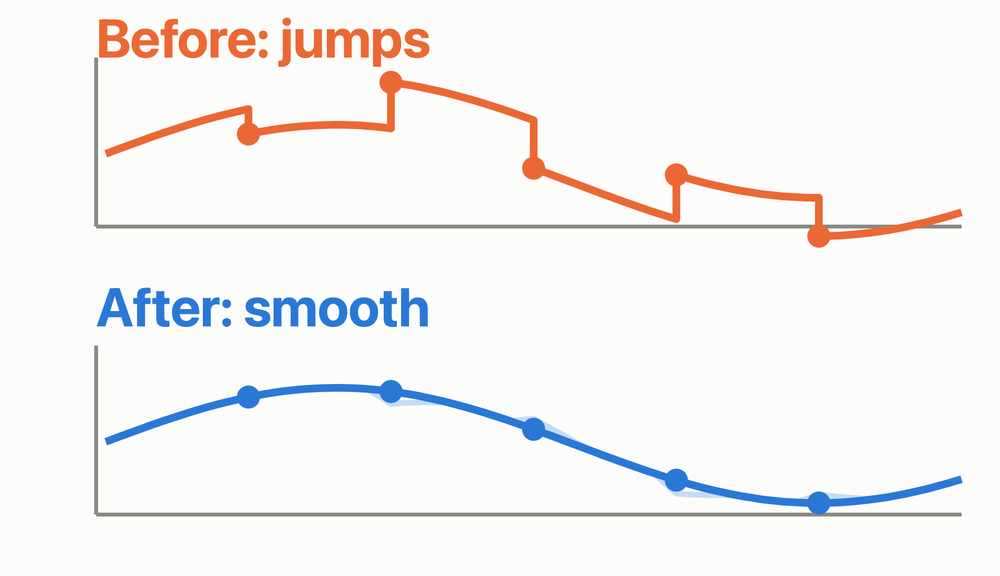
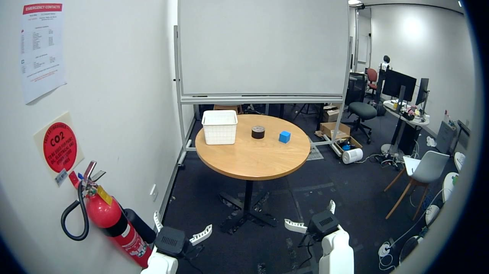
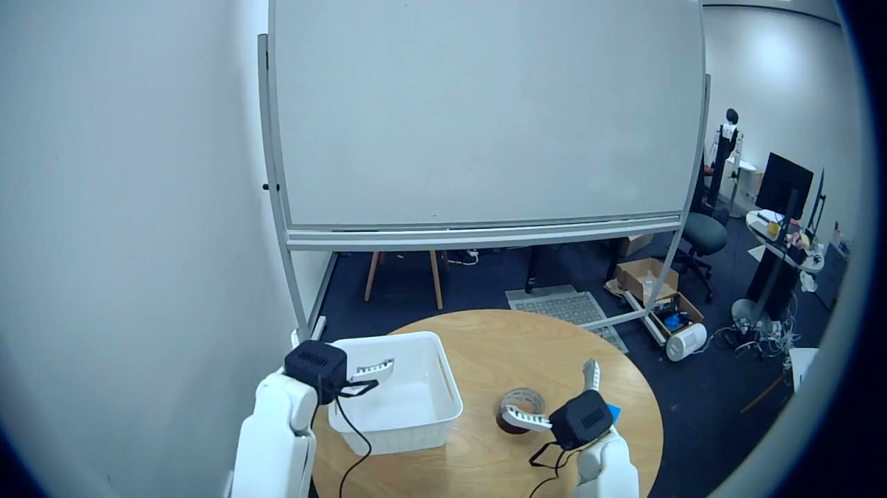
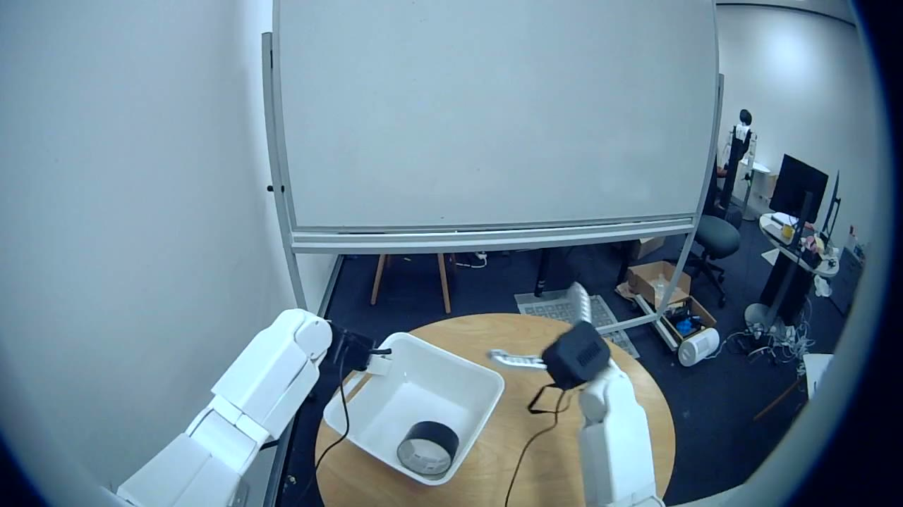
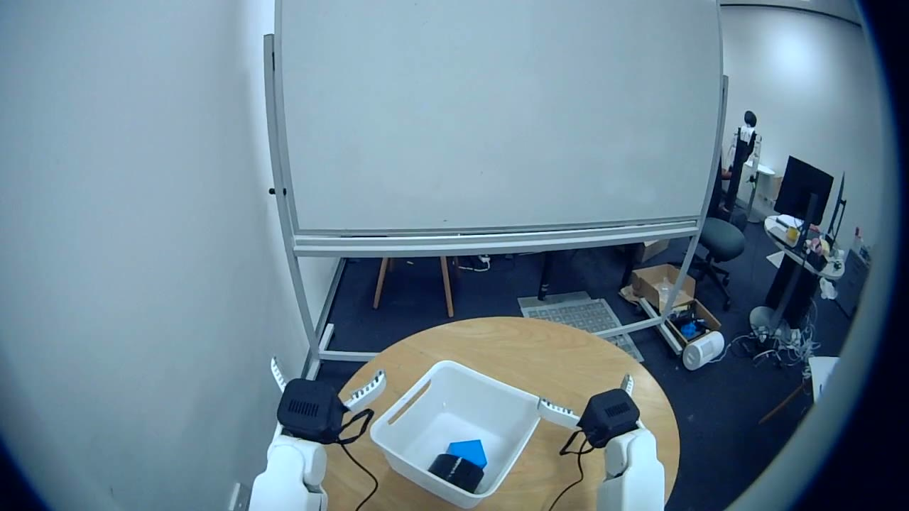
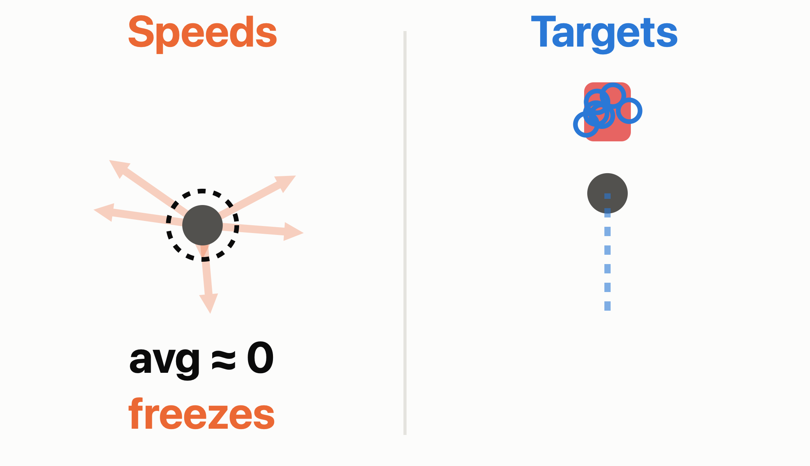
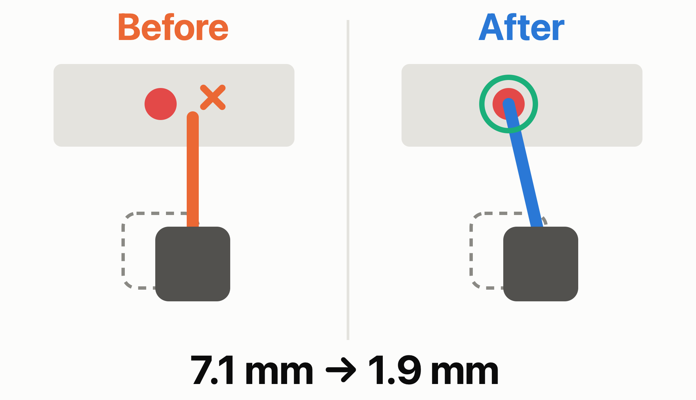
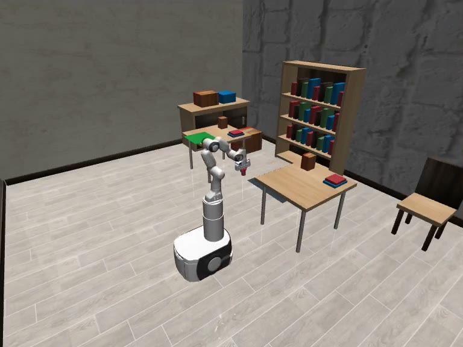